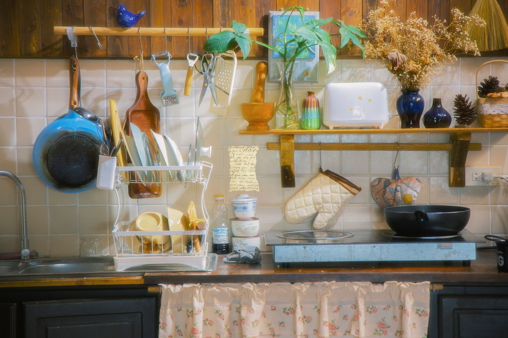

This is my pan. I use this every day. I remember my grandson burning his hand on it. Poor kid.
This is a sink. I remember when my grandson left it on and flooded the kitchen. Good times!
This is my secret sauce that makes anything taste better.
Explore the pan, sink, and sauce to uncover the recipe.